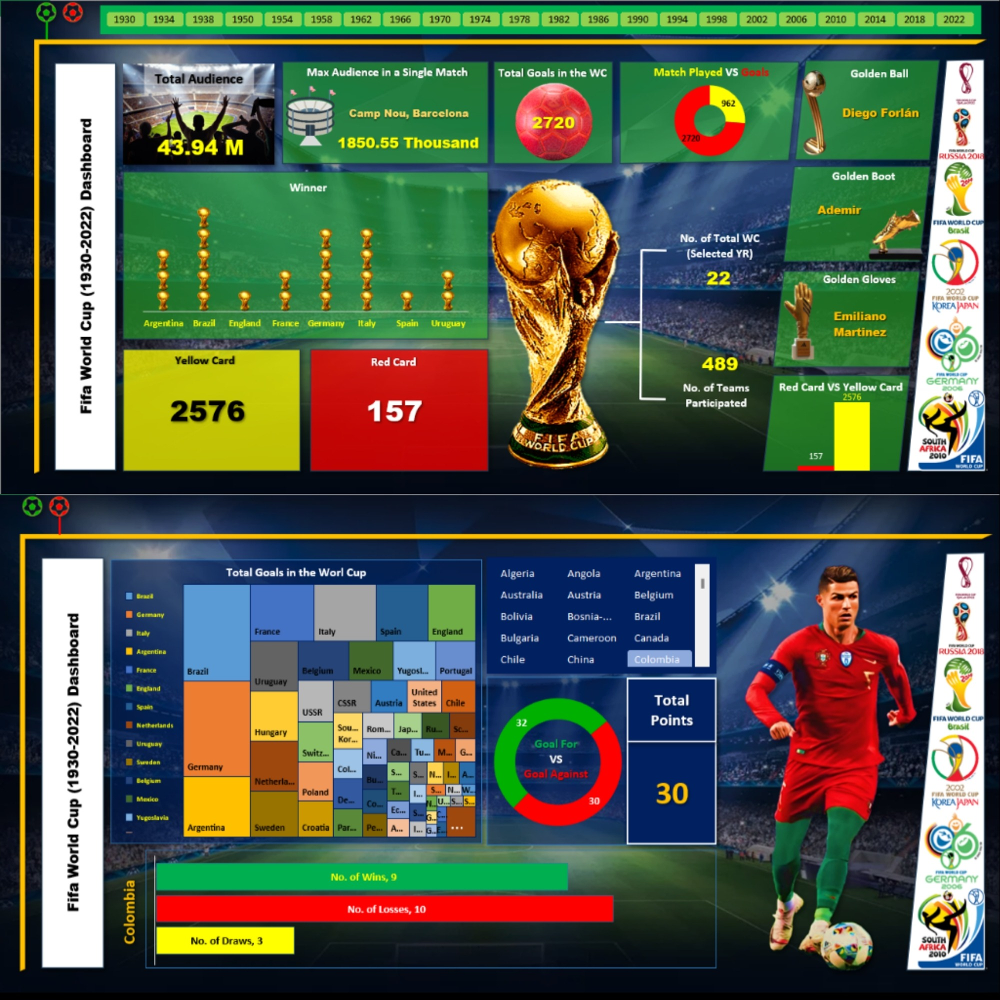
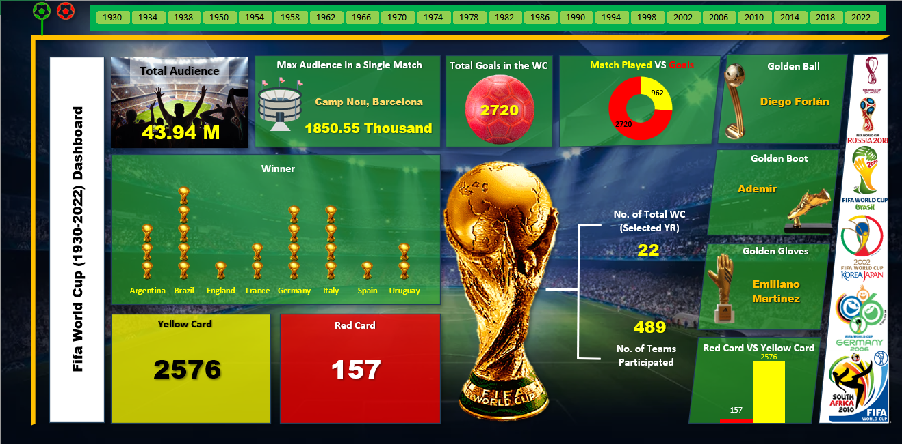
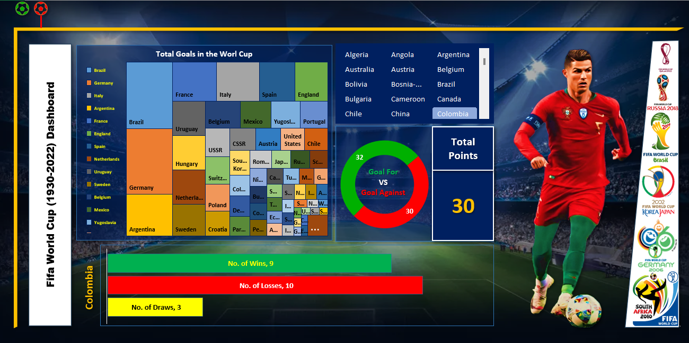

Projects / Excel Projects / FIFA WC Dashboard
← Back to Excel projectsExcel project
FIFA WC Dashboard
An interactive Excel dashboard exploring FIFA World Cup history and tournament statistics.
Microsoft ExcelData visualization

Project overview
The dashboard presents World Cup history and selected-year summaries, including audience, goals, match statistics, winners, awards, cards, participating teams, and country-level performance views.
Dashboard pages


What this project demonstrates
- Organizing data and presenting information in a clear, decision-friendly format.
- Applying the selected tools to a practical reporting or analytics use case.
- Designing an experience that makes key information easier to explore.